La 1a serie (1971 - 1977)
La fiat 127 fece compiere un grande balzo in avanti alle utilitarie Fiat. In campo europeo introdusse la nuova classe delle utilitarie lunghe 3,5 metri, agili in città e adatte a grandi viaggi. Nel 1972 fu eletta auto dell’anno.
La 127 volse pagina nella storia fiat grazie al motore trasversale e la trazione anteriore .
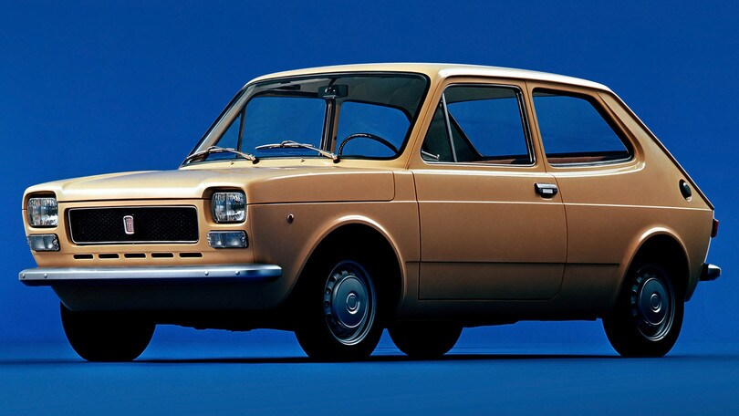
Già nel 1947 l’ing. Dante Giacosa, aveva progettato un’auto con il motore davanti e la trazione anteriore, ma il progetto non superò mai il visto dei dirigenti Fiat.
Probabilmente la contrarietà della dirigenza, risiedeva in un accaduto degli anni 30: l’Ing. Oreste Lardone progettò una vettura a trazione anteriore e durante il collaudo, la vettura prese fuoco e l’allora presidente della Fiat che si trovava a bordo, riuscì a defilarsi e licenzio in tronco l’Ing. il presidente di quegli anni era il senatore Giovanni Agnelli (nonno dell’avvocato) che non volle più sapere di trazione anteriore.
Quando nel 1959 la Morris mise in produzione la Mini Minor alla Fiat cominciarono a rivalutare il progetto di Giacosa, che riprendette gli studi del progetto per essere utilizzati sul marchio Autobianchi, in Fiat non erano ancora svaniti i dubbi di successo.
La prima anteriore di casa fiat fu la 128 anche se non è possibile considerarla un’utilitaria.
Nel 1971 anni toccò proprio alla 127, il compito di trasferire la trazione anteriore su un’utilitaria, quando nel mese di marzo fu presentata come sostitutiva della 850.
La nuova vettura adottò lo schema che era già stato collaudato sulla a112, con il motore 903 derivato dalla 850, montato però davanti di traverso in blocco con cambio e differenziale.
Questo schema tecnico aumentò le dimensioni di abilità interna, spazio ulteriormente enfatizzato dai progettisti che aumentarono passo e dimensioni esterne, che decretarono un rapporto di spazio nell’abitacolo mai visto in precedenza.
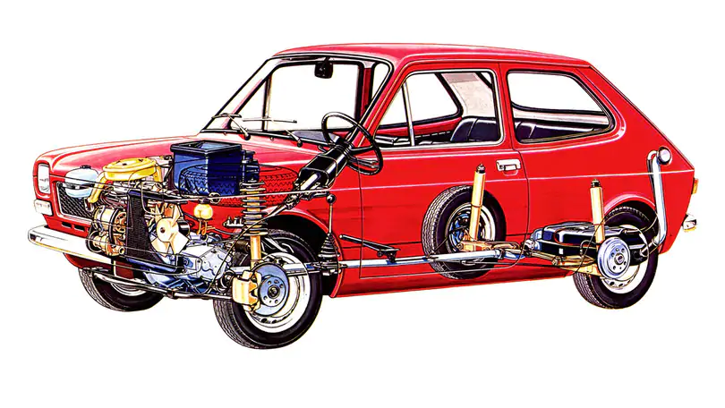
Il progetto della scocca fu affidato a Pio Manzù, figlio del noto scultore Giacomo Manzù. Lo stile che ne emerse fu innovativo così come nella meccanica, dal rapporto tra dimensioni esterne e quello dedicato alla meccanica si determinò una veste bassa e larga, accattivante e dinamico.
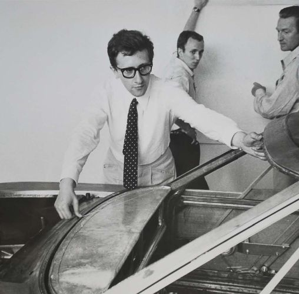
Tutti gli elementi della vettura furono curati nel dettaglio e tutto fu dettato per essere originale.
Le superfici vetrate al posteriore donavano una grande visuale e enfatizzavano i grandi volumi interni.
Fiat aveva voltato pagina, anche la cura degli interni fu un elemento di stacco con la produzione precedente, la plancia con elementi in legno priva di parti in metallo a vista.
Nello stesso anno del suo debutto fu proclamata auto dell’anno e questo portò molti altri produttori a rinnovare la gamma utilitarie.
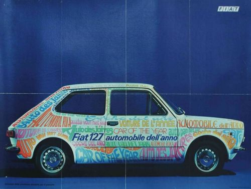
Nel 1972 debuttò la versione a 3 porte, caratterizzata dal portellone posteriore e dallo specchietto retrovisore esterno sullo sportello, che era previsto dal codice per le sole auto provviste di portellone.
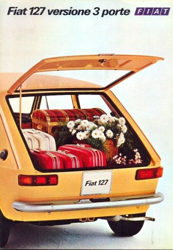
La 3a porta posteriore introdusse un modo di vivere la vettura del tutto nuovo prima di allora, abbattendo i sedili posteriori la possibilità di carico era senza precedenti, riservata fino a quel momento ai soli veicoli commerciali.
Nel 1974 approdò la 127 special meglio rifinita e con alcuni inserti in gomma nei paraurti, impreziosita da molte cromature, con interni completamente nuovi e arricchiti.
Calandra completamente di nuovo disegno, cornice cromata degli indicatori di direzione, cornice cromata sulle gomme dei vetri e sui coggiolati, un nuovo tappo per il serbatoio della benzina corredato di relativa chiave, modanature lungo la fiancata e coppe ruota dal disegno esclusivo.
All’interno plancia completamente nuova, con strumenti aggiuntivi quali temperatura dell’acqua, comfort ampliato da un accendisigari e dal ventilatore a 2 velocità, portaoggetti sul tunnel centrale, moquette e modanature sui montanti.
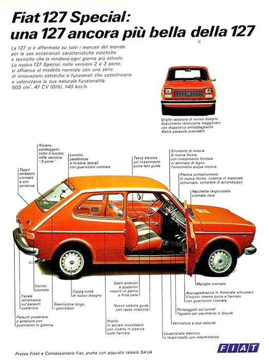
Nel 1976 il primo decreto antinquinamento portò il 903 dai 47cv a 45cv.
Sempre nel 1976 fu commercializzata la versione 4 porte costruita negli stabilimenti dell’affiliata spagnola.
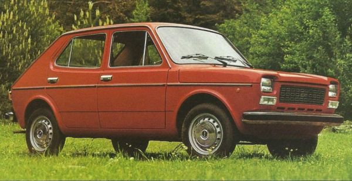
La 2a serie (1977-1981)
Nel 1977 la fiat operò il suo primo restyling, lanciando la 2a serie, nel rinnovamento erano cambiati il frontale, il cofano e le fiancate, ed anche i cerchi con delle nuove coppette copriruota; anche la motorizzazione ebbe delle novità con l’aggiunta di un propulsore benzina di 1050cc di 50cv (realizzato in brasile, il cosi dettò “brasiliano”)
Le finiture di diversificarono in 3 livelli: la base “L”, la comfort “C”, e la comfort lusso “CL”.
Per la meccanica furono allungati i rapporti di trasmissione e altri interventi per ridurre consumi e rumori.
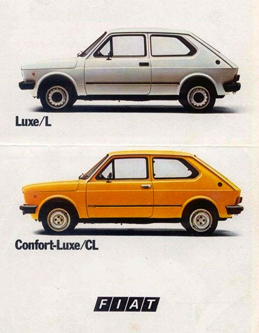
Nel luglio 1978 fu presentata la 127 sport, con un motore brasiliano da 70cv e 160Km/h, caratterizzata esteticamente da un alettone posteriore, i cerchi più larghi e il volante a razze in alluminio. i colori furono esclusivi: nero, arancio e grigio metallizzato.
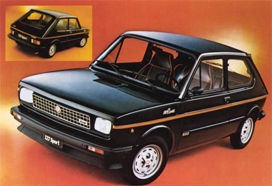
Nel 1981 si ridussero a 3 le versioni: super, special, sport.
Sempre nello stesso anno fu presentata la versione con motore diesel, derivata dalla versione brasiliano la 147 diesel.
Nel 1980 fiat introdusse la versione panorama, giardinetta 3 porte, con alcune linee riprese dal modello brasiliano.
La 3a serie ed unificata (1981-1987)
Nel dicembre 1981 fiat intervenne esteticamente con un nuovo rinnovamento.
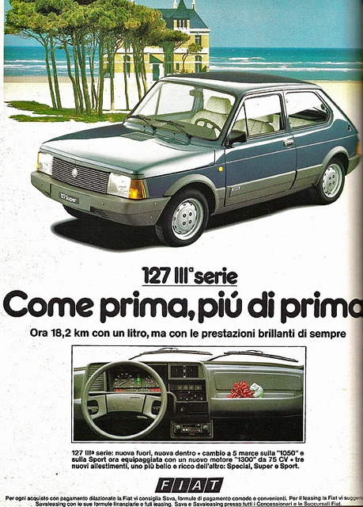
Nel 1983 dopo l’arrivo della Uno, tutti i motori benzina si unificarono nell’unica motorizzazione di 1050cc.
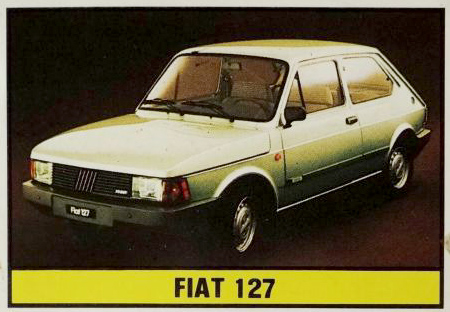
Nel 1986 fiat decise di cessare la produzione, anche se la domanda che continuava a essere incessante per via degli innumerevoli estimatori, continuando a produrre solamente la Uno sulla fascia delle utilitarie.
testo tratto da www.fiat127club.it